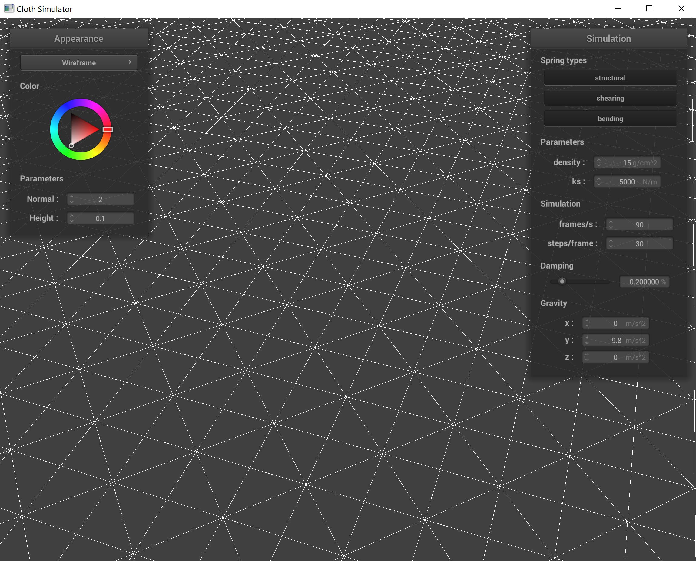
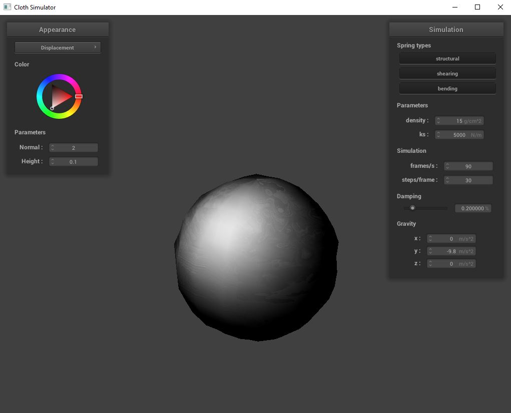

In this project, we made a real-time cloth simulator. Our implementation allows the cloth to respond to gravity as expected (using masses and springs with numerical integration), collide with spheres, planes, and itself (using bumping and spatial maps), and take on different shaders (Diffuse, Blinn-Phong, Texture Mapping, Bump & Displacement Map, and Mirror).
Things we didn’t take into account/problems encountered and solved:
Initially, our grid was not showing up at all when we ran clothsim.exe. We realized the issue was from how we were pinning our vertices while accessing the vector<std::vector<int>> data structure. Some adjustments with our indexing into the array resolved the issue.
Deliverables:
Below are screenshots of scene/pinned2.json where we are looking at the structure of our point masses and springs in the cloth wireframe.
Below is the wireframe without any shearing constraints.
Below is the wireframe without only shearing constraints.
Below is the wireframe without all constraints.
Things we didn’t take into account/problems encountered and solved:
Originally, our cloth had not behaved as expected in response to gravity. We realized the issue was when we iterated through point masses to do Verlet integration, we were making changes to copies of the PMs instead of the original ones. A quick dereferencing in our for loop resolved the issue.
Deliverables:
The larger the spring constant value (ks), the larger the force applied on each point mass pair is. Consequently, raising the ks value causes the cloth to have more folds, as seen in the following rendering.
The larger the density value of the cloth is, the less recursive movement effect a force has. For example, in the first low density screen shot below, the entire cloth ripples as soon as it touches the sphere, whereas in the second high density shot, only the exact part of the cloth that is touching the sphere moves.
Damping helps to simulate the loss in energy that would occur due to heat/friction of the cloth and a collision object. The larger the damping value, the smaller the cloth’s movement is in future timesteps.
Below is the cloth from scene/pinned4.json at rest using default parameters.

Things we didn’t take into account/problems encountered and solved:
One problem we ran into was our cloth was vibrating a little bit too much when it was resting on the flat plane. After we adjusted how we were scaling our forces, the vibration went down significantly (to an expected amount).
Deliverables:
Below are screenshots of scene/sphere.json where ks is set to 5000, 500, then 50000 in that order.
The more we increase ks, the more folded the cloth becomes while lying on the sphere. With ks = 50000, we see a looser fit around the sphere, while with ks = 500 the cloth more tightly follows the sphere's curvature.
Below, we see a shaded cloth at rest on our plane.
Things we didn’t take into account/problems encountered and solved:
The main problem that we had with this section was our cloth was still clipping into itself and not self colliding properly. After debugging, we found it was an issue with our hash_position function. After adding a case for each orientation and tweaking the final returned calculation, our cloth began to fold on itself as expected.
Deliverables:
In the following images, we see our cloth's journey in folding as it collides with the plane and itself.
Lower ks and higher density values cause the cloth to self-fold/move only closer to the impact point on the ground, whereas higher ks and lower density values immediately cause movement all the way up the cloth after initial contact.
The next two images show the cloth with low and then high density values.
The next two images show the cloth with low and then high ks values.
Things we didn’t take into account/problems encountered and solved:
In doing Blinn-Phong shading, adjusting the coefficients to light the cloth in the most visually pleasing way took some effort. In doing bump mapping, we had a bug as a result of the fractions contained in the calculations for dU and dV.
Deliverables:
A shader program is a program that determines attributes of an image such as a pixel's color and light. The programs are optimized for use on GPUs, which can efficiently process mathematical data and are parallelized. Vertex shaders calculate transformed mathematical attributes of an image and produce position outputs of various coordinates. Fragment shaders calculate color of pixels using the output of the vertex shaders.
Blinn-Phong shading integrates ambient lighting, diffuse reflections, and specular reflections. A half vector near the normal serves to remove inaccuracies resulting from Phong reflection. Constants ka, kd, and ks serve to refine our lighting model, and the value p affects the degree of specular reflection present, giving the cloth texture more shine.
Below are images of Blinn-Phong shading applied on our cloth, followed by the ambient, diffuse, and specular portions on their own.
Below, we see our texture mapping shader being put to use with a texture of Among Us crewmates (and potentially an imposter).
Here, we have bump mapping shown on our cloth and sphere, followed by displacement mapping on our sphere.
Bump mapping involves shading object frags using surface normals in computing lighting. Displacement lighting takes this a step further by also altering the positions of vertexes, manipulating the 3D visualization of objects. Displacement mapping thus feels more "life-like" and 3D, in comparison with bump mapping, which feels artificially smooth in comparison.
Now, we will change the sphere's coarseness and see its visual appearence through bump and then displacement mapping. The following images show the sphere rendered with -o 16 -a 16 and viewed using bump and displacement mapping respectively.
The next two images show bump and displacement mapping on the sphere with -o 128 -a 128.
We notice that for the displacement spheres especially, the lower 16x16 resolution leads to a poor quality mesh as there are too little vertices that every adjustment is magnified; the top of our sphere looks "caved in" as a result. The higher 128x128 resolution produces a sphere accurately adjusted to the texture. Bump mapping, without the vertex adjustments, look relatively similar with both resolutions.
Here we see the mirror shaders and its effect on our cloth and sphere.
As partners, we collaborated mostly remotely as a result of Lucas' injury. Our collaboration itself went a lot smoother than the last project. This can be attributed to both of us having a stronger grasp on the material of this project as opposed to previous projects, and that we were able to get the help we needed in project parties from TA’s and our peers. We definitely benefited from proactively starting the project and making use of as many OH’s/Project Parties as our schedules allowed this time. This class has been a powerful intellectual experience in exploring the world of computer graphics, and we are excited to experiment with our own ideas in the final project.
Our webpage is at https://cal-cs184-student.github.io/sp22-project-webpages-Lukatastic/proj4/index.html